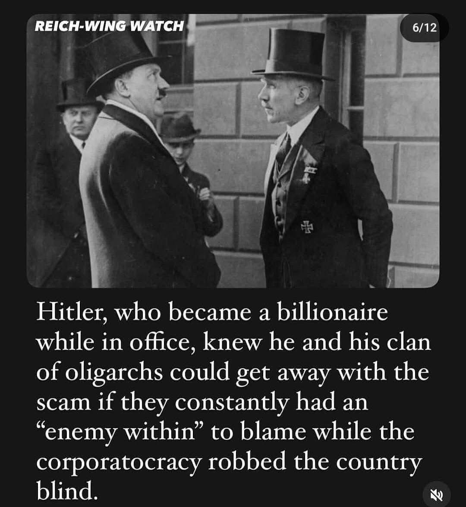
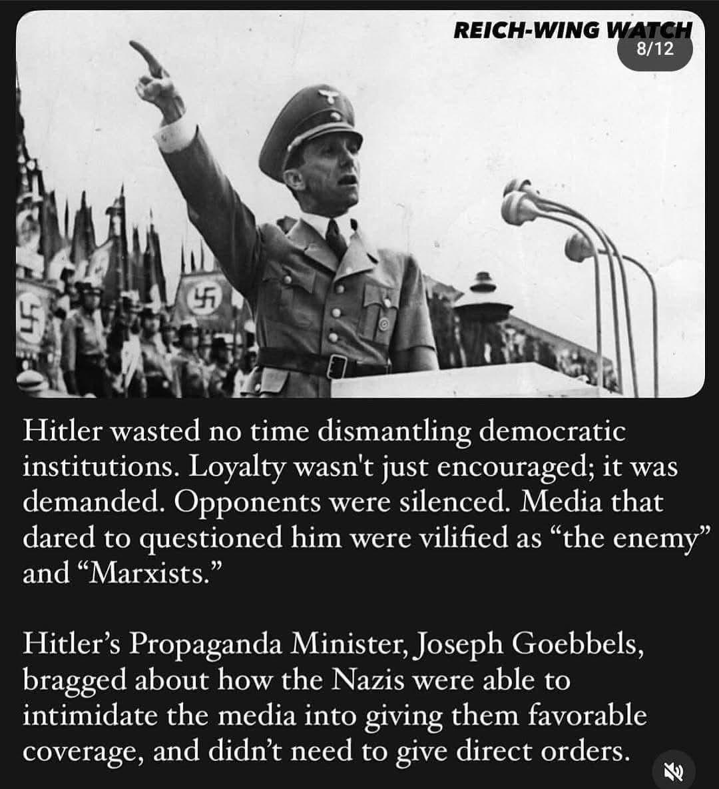
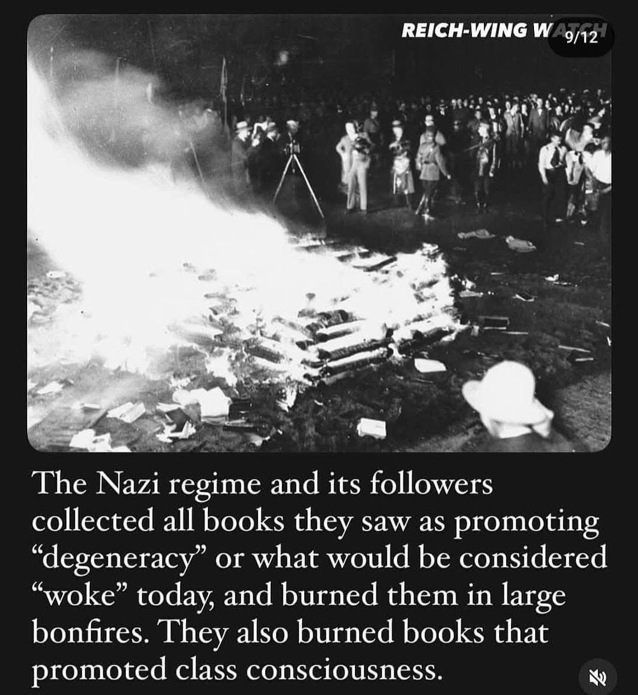
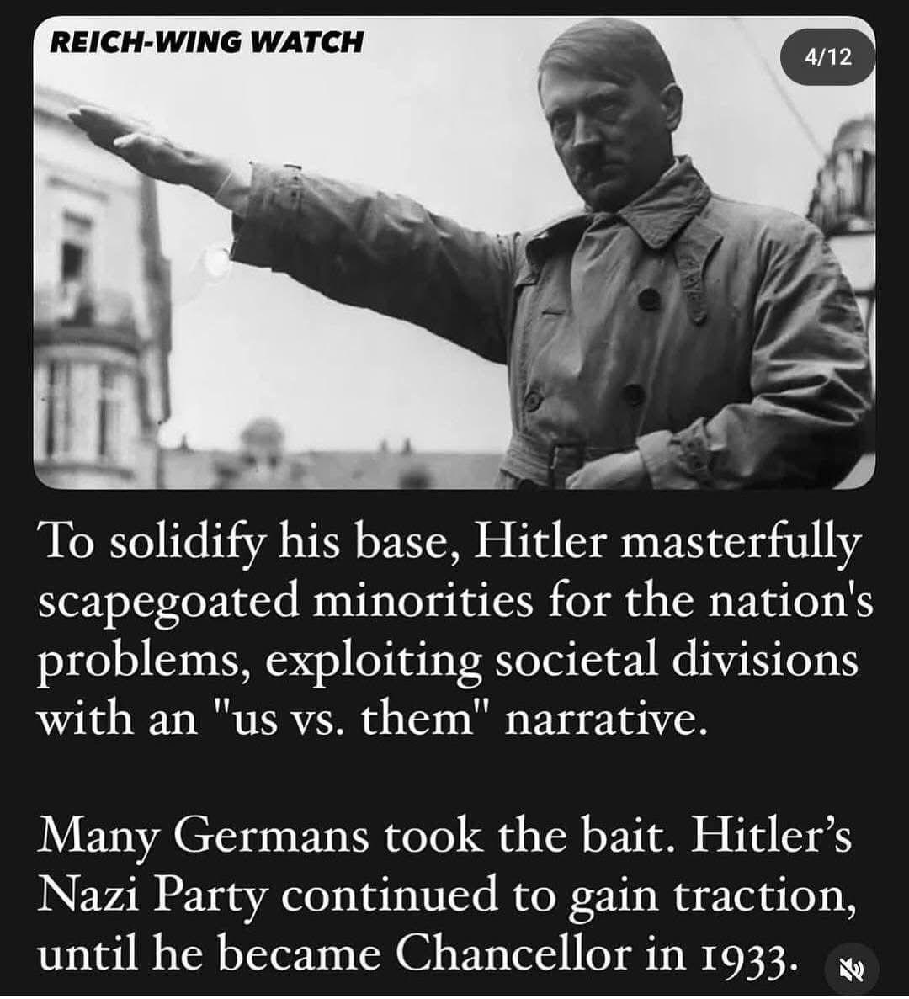
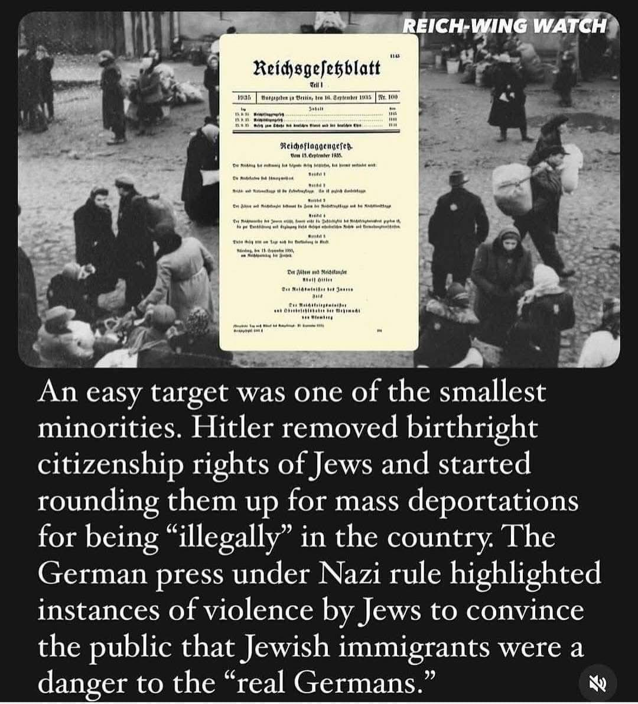
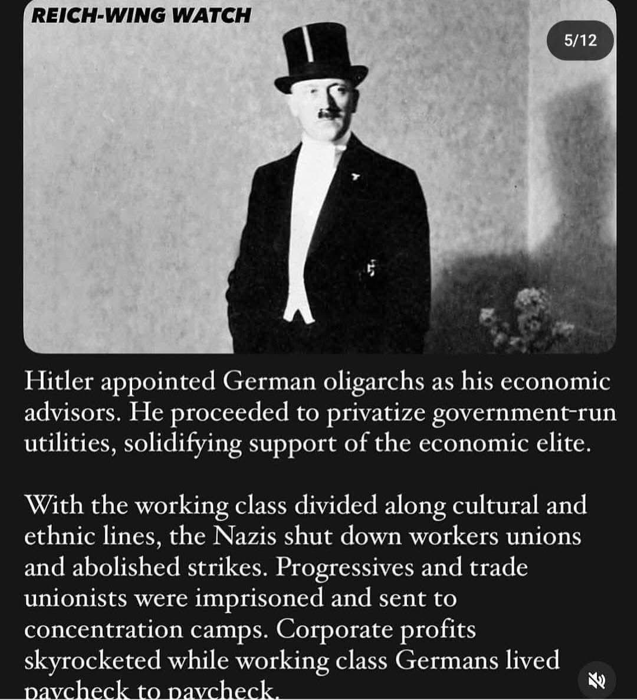
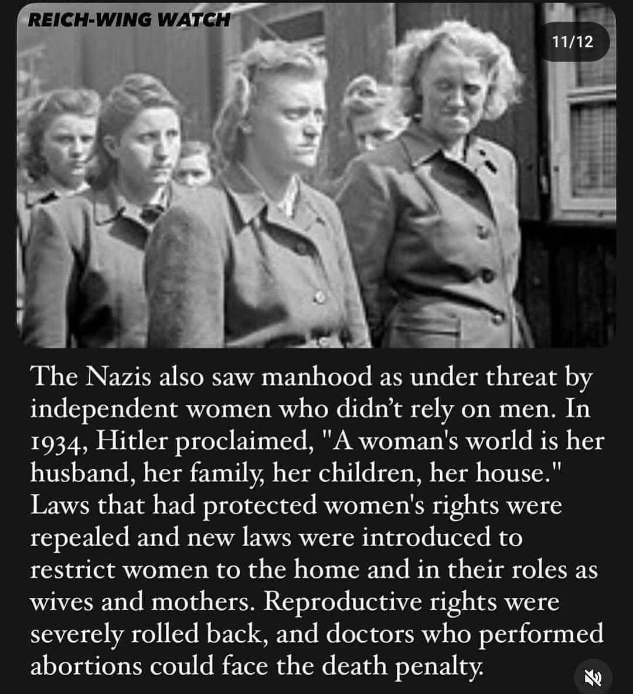
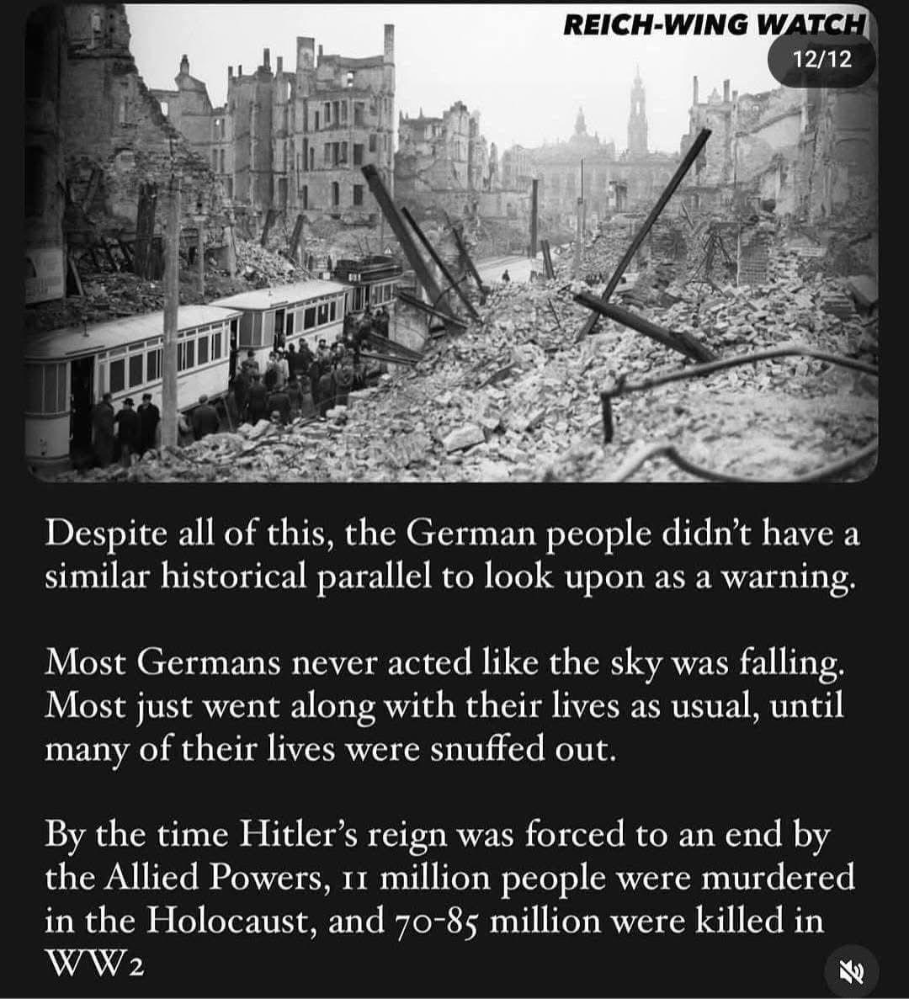
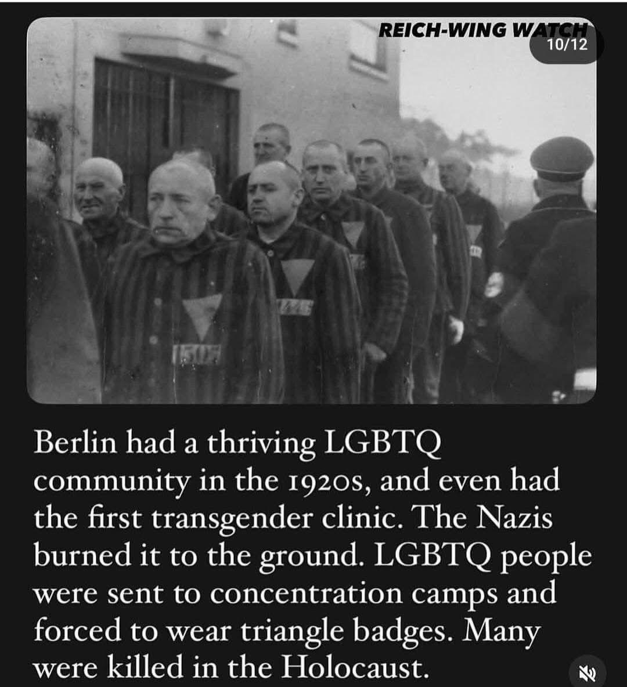

The Warning Signs Are Back. This Time, We Have No Excuse.
By Ron Botelho, Ph.D. student in Complex Sciences, Binghamton University
This article draws on the historical record to expose the alarming parallels between the rise of Hitler and the ideology behind Project 2025 and the Trump administration. Through careful analysis of disinformation, scapegoating, propaganda, corporatism, and the dismantling of democratic safeguards, it presents a clear warning—one history has already issued.

Hitler used scapegoats to distract from elite corruption. (Reich-Wing Watch)

Loyalty was demanded; dissent was vilified. (Reich-Wing Watch)

Minorities were blamed to unite Hitler's base. (Reich-Wing Watch)

Jews lost citizenship before deportation. (Reich-Wing Watch)

LGBTQ+ communities were targeted and imprisoned. (Reich-Wing Watch)

Hitler privatized utilities and jailed unions. (Reich-Wing Watch)

Books on equality and progress were burned. (Reich-Wing Watch)

Independent women were silenced. (Reich-Wing Watch)

Millions paid the price for ignoring the signs. (Reich-Wing Watch)
APA-style citation:
Botelho, R. J. (2025). The warning signs are back. This time, we have no excuse. Substack Archive. https://github.com/Ron573/substack-archive
Disclaimer: This publication reflects the author's own views as a Ph.D. student in Complex Sciences at Binghamton University. The work may be reproduced, shared, or distributed freely with attribution, but may not be altered.